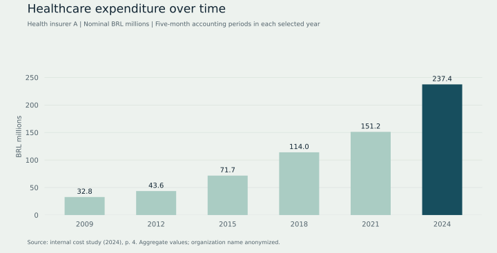
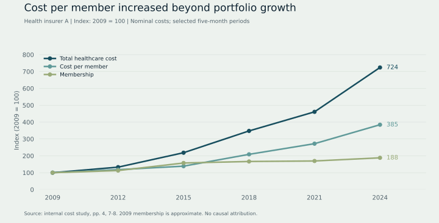

Business framing
Translate a broad cost question into comparisons across time, population segments and expense groups.
Case study · Healthcare analytics
Understanding the factors behind medical expenditure.
01 · Business question
Healthcare expenditure brings together changes in population, service use, prices and care needs. The analytical challenge is to organize these dimensions so management can investigate cost pressure in context.
02 · My approach
Translate a broad cost question into comparisons across time, population segments and expense groups.
Use time-series comparisons, segmentation and inflation adjustment to distinguish nominal changes from real expenditure trends.
Present patterns and areas for further investigation in an executive-oriented analytical report.
03 · Results from the study
The following charts reconstruct aggregate values from the original study. Each selected year covers five accounting months; values are nominal BRL. Health insurer A is an anonymized organization label.


Download the transcribed aggregate data: cost_history.csv
04 · Decision relevance
Across the selected 2009-2024 periods, nominal expenditure rose from BRL 32.8 million to BRL 237.4 million, while membership rose from approximately 53,500 to 100,717. Reported cost per member increased from BRL 612.97 to BRL 2,357.35. This establishes that population growth alone does not describe the expenditure trajectory; prices, utilization and case mix require further investigation.
Changes in costs can guide investigation, but correlations alone do not establish causality. Attribution requires additional controls and suitable data.
05 · Skills demonstrated